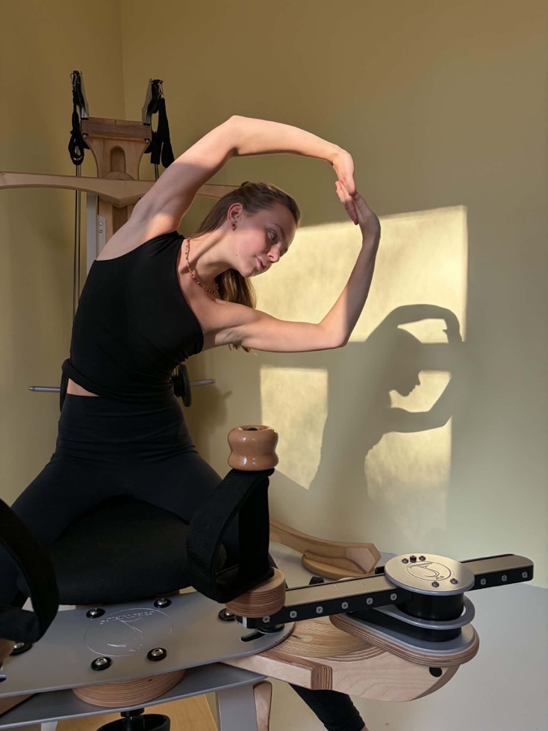

Natalia „Kulpi”
Przeczytaj biogram · Natalia „Kulpi”
Instruktorka pilatesu i jogi · studentka fizjoterapii
Cześć, tu Kulpi! Zaczęło się od tańca. Tańczyłam od dziecka i do dziś na zajęciach zwracam uwagę na to, jak jeden ruch przechodzi w kolejny. Później przyszły joga i pilates. W pilatesie szczególnie lubię to, że można pracować nad siłą i stabilnością, a jednocześnie szukać w ruchu lekkości.
W KulPilates prowadzę kameralne grupy, bo lubię mieć czas dla każdej osoby. Mogę podejść, podpowiedzieć drobną zmianę albo zaproponować inną wersję ćwiczenia. Zależy mi, żebyście czuli się na sali swobodnie i mogli powiedzieć, jak Wam się dzisiaj ćwiczy.
Mam też doświadczenie w prowadzeniu pilatesu dla kobiet w ciąży. Jeśli spodziewasz się dziecka, dobieram ćwiczenia do etapu ciąży, Twoich potrzeb i tego, jak się danego dnia czujesz. W miarę jak zmienia się Twoje ciało, wspólnie szukamy wygodnych pozycji i tempa, które Ci odpowiada.
Studiuję fizjoterapię, rozwijam swój warsztat w programie Comprehensive szkoły Polestar Pilates i szkolę się w metodzie GYROTONIC®. To, czego uczę się o anatomii i ruchu, zabieram ze sobą na salę.
Do zobaczenia w studiu!